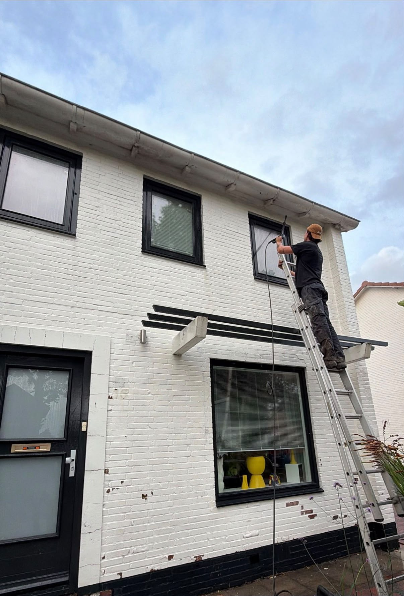
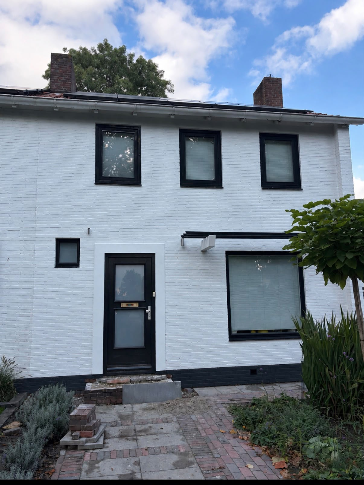
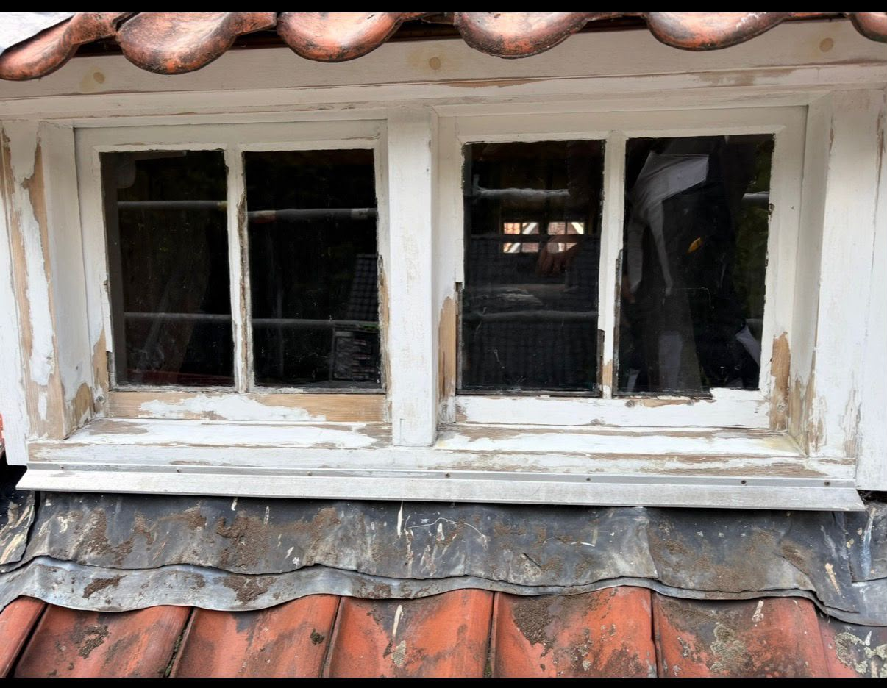
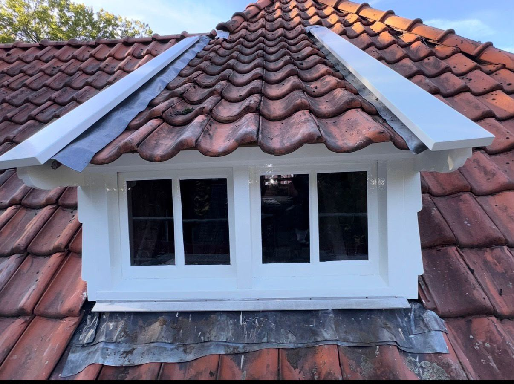
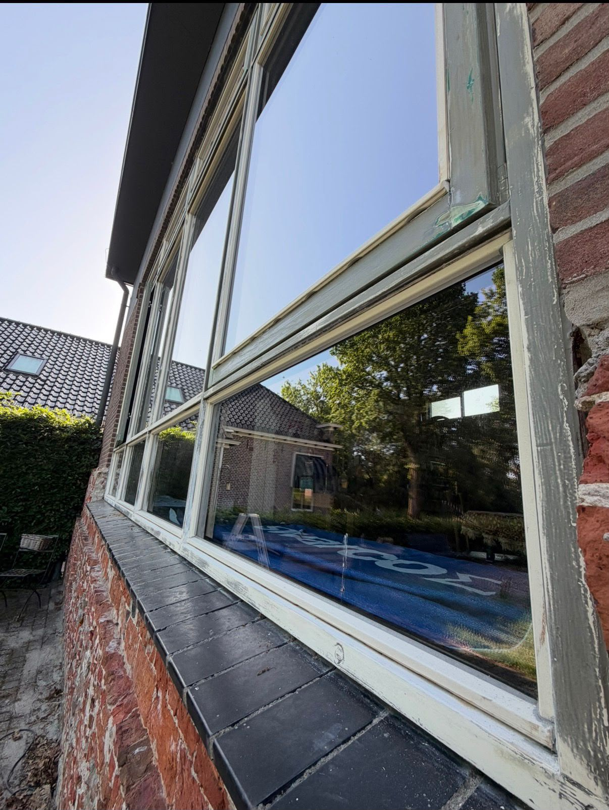
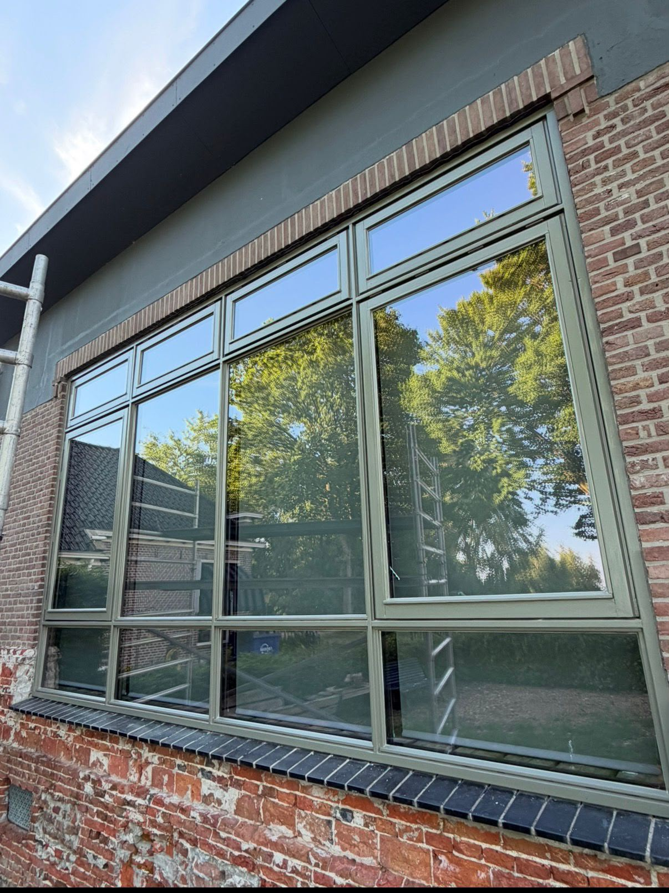
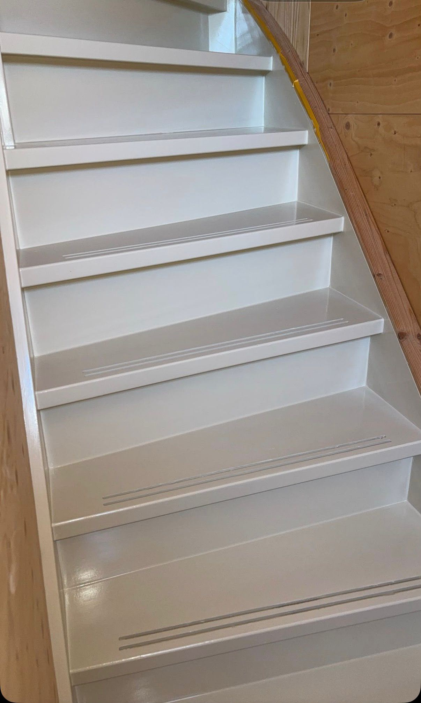
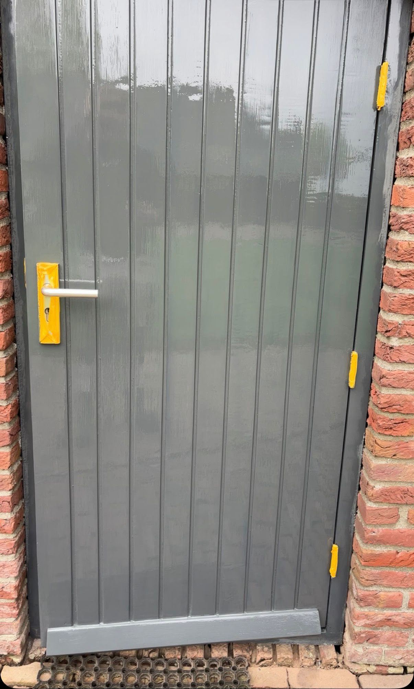
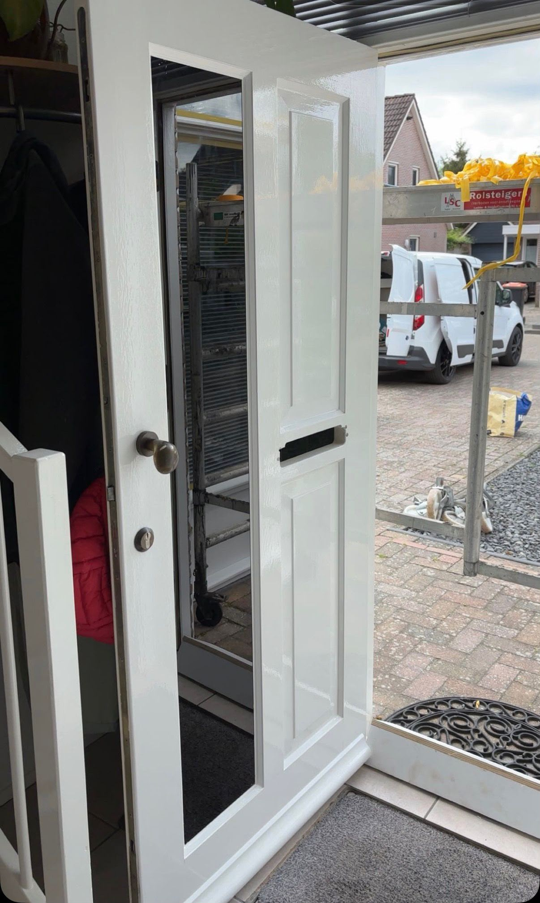

Voor & na · BuitenschilderwerkEen frisse uitstraling
Een frisse uitstraling
voor de gevel.


Bekijk het vakwerk van dichtbij. Bij de voor- en nafoto’s ziet u hoe een goede afwerking het verschil maakt. Klik op een foto om de volledige afbeelding te openen.









Uw project, onze zorg